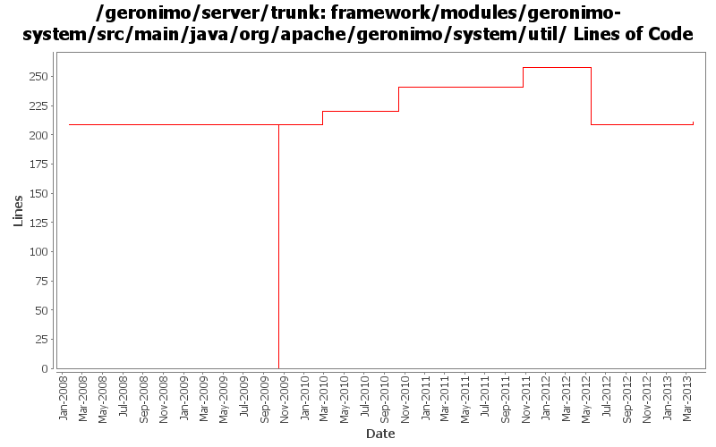

[root]/framework/modules/geronimo-system/src/main/java/org/apache/geronimo/system/util

| Author | Changes | Lines of Code | Lines per Change |
|---|---|---|---|
| Totals | 16 (100.0%) | 280 (100.0%) | 17.5 |
| djencks | 4 (25.0%) | 209 (74.6%) | 52.2 |
| rwonly | 4 (25.0%) | 52 (18.6%) | 13.0 |
| genspring | 1 (6.3%) | 12 (4.3%) | 12.0 |
| xiaming | 1 (6.3%) | 3 (1.1%) | 3.0 |
| xuhaihong | 1 (6.3%) | 2 (0.7%) | 2.0 |
| kevan | 1 (6.3%) | 2 (0.7%) | 2.0 |
| jlaskowski | 2 (12.5%) | 0 (0.0%) | 0.0 |
| jdillon | 2 (12.5%) | 0 (0.0%) | 0.0 |
GERONIMO-6389 Obscuring Passwords Feature couldn't work (Patch from XieZhi)
Register {Configured} prefix to EncryptionManager while starting the server.
2 lines of code changed in 1 file:
Merge 1333350,1333352,1334031,1334300,GERONIMO-6345,GERONIMO-6348 into trunk
3 lines of code changed in 1 file:
add missed license headers
17 lines of code changed in 1 file:
some codes clean up
1 lines of code changed in 1 file:
GERONIMO-5638 Remove the encrypt(String) method from ConfiguredEncryption
34 lines of code changed in 2 files:
https://issues.apache.org/jira/browse/GERONIMO-3003, port #896316 from 22 branch to trunk.
12 lines of code changed in 1 file:
GERONIMO-4916 step 2 move sandbox osgi framework into trunk
209 lines of code changed in 2 files:
GERONIMO-4916 step 1 remove old framwork
0 lines of code changed in 2 files:
header fixes (Rev, Date)
0 lines of code changed in 2 files:
GERONIMO-1761 move geronimo-util to geronimo-crypto. Still pending mv of one test directory that svn wouldn't let me move
2 lines of code changed in 1 file:
(GERONIMO-3747) Fixed parentage of module groups, though most still need to have their modules put into the proper groupId
Updated groupId of *everything* under framework/** to org.apache.geronimo.framework, and did my best to update all references
0 lines of code changed in 2 files: